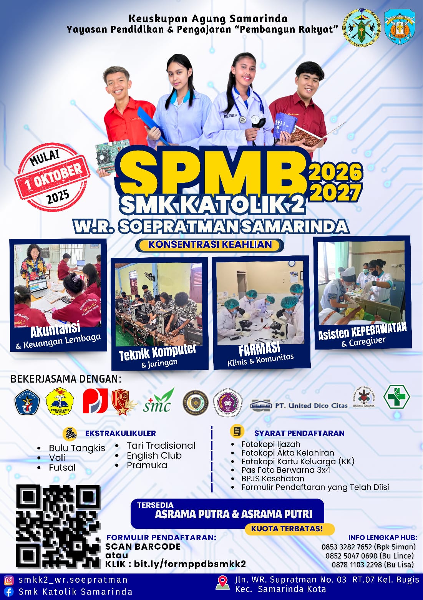

SMK Katolik 2 WR Soepratman Samarinda Sekolah modern dengan pendidikan berkualitas, berkarakter, dan siap kerja.
Daftar SekarangPilih jurusan terbaik sesuai minat dan bakatmu
Akuntansi & Keuangan Lembaga
Teknik Komputer & Jaringan
Klinis & Komunitas
Caregiver & Kesehatan
Kegiatan belajar dan fasilitas sekolah

📍 Jln. WR. Supratman No.03 RT.07 Kel. Bugis
Samarinda Kota - Samarinda
📞 0853 3282 7652 (Bpk Simon)
📞 0852 5047 0690 (Bu Lince)
📞 0878 1103 2298 (Bu Lisa)